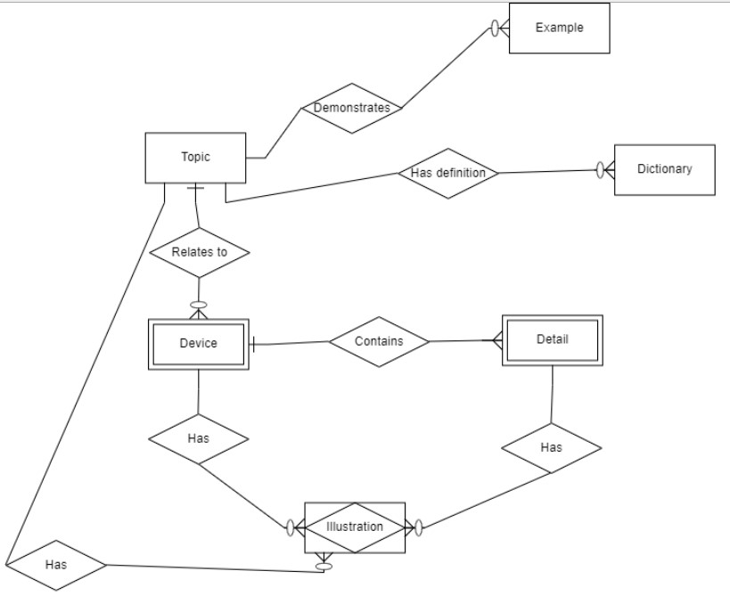

<h3>Варіант-7. Предметна область - "Довідник з радіотехніки"</h3><br>
<br>
Як можна побачити, усі сутності з опису ПО були перенесені до Інфологічної моделі та з'єднані відповідними типами з'єднань. 